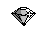
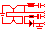

Die Monitore Der SC1425 Monitor
Der SC1435 Monitor
Der SM194 Monitor
Der TTM194 Monitor
Der TTM195 oder ProScreen Monitor
Der PTC1426 Monitor
 Das TOS Betriebs- Das TOS Betriebssystem
system
Die TOS Patches von ATARI
Die Fehlermeldungen des Betriebssystems
Ein unentdecktes Feature in MultiTOS
Die verschiedenen Netzwerktypen für den Atari
 Die Netzteile Die verschiedenen Netzteiltypen
Die Steckerbelegung
 Die Grundlagen Der VME Bus
Die Grundlagen Der VME BusMonitor-Adapter von 15 auf 9 Pol
2N3904 Transistor und Ersatztyp
Wie geht man mit dem Lötkolben um
Rund um den SCSI-Anschluß
Eine Übersicht über verschiedene SCSI Kommandos
Rund um den IDE-Anschluß
SyQuest Fehlermeldungen
Seagate Fehlermeldungen
Fehlermeldungen aus dem SCSI Standardwerk
Geschwindigkeit der Fest- und Wechselplatten
Der WD1772-Floppycontroller
LOGIC SCSI Controller und nicht von NCR oder AMD !
Wie schliesst man den Monitor an den Rechner an
Wichtiges zum Monitorkauf
Synchronisationsfrequenzen der Monitore
weiterblättern